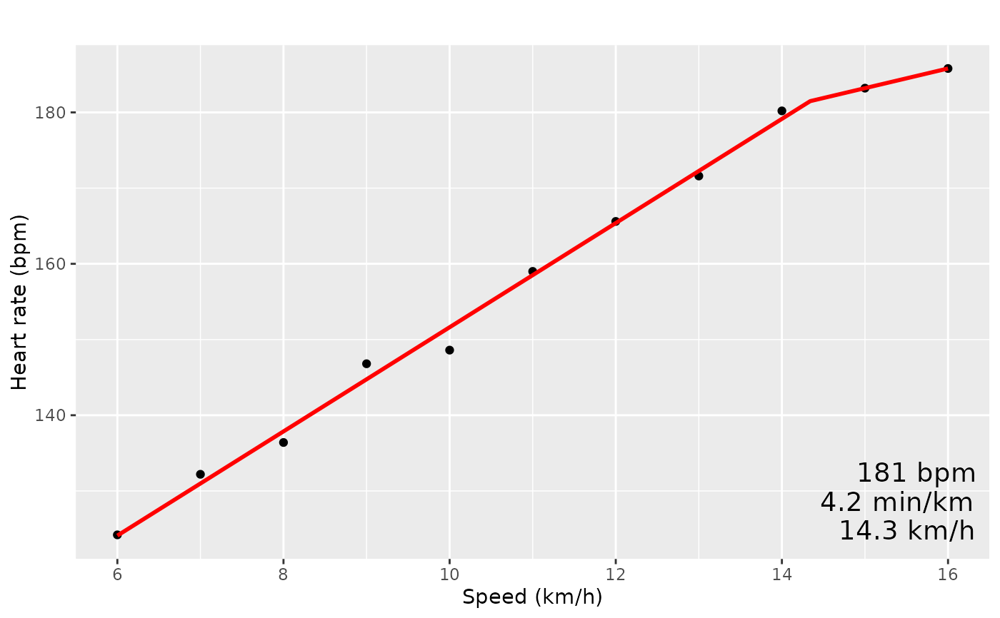

Fit piecewise linear model
Arguments
- dat
data.frame output by the prepdata() function
- alldata
If FALSE (default), only the final 5 heart rate measurements of each step are used to fit the changepoint model. If TRUE, all data are used.
- textsize
size of the breakpoint speed & pace text printed on plot (default: 5)
- title
title of plot (default: ”)
Examples
# Note, files in this package are gzipped to save space. TCX files exported
# from Garmin Connect or others will not have the `.gz` extension and you
# should not use `gzfile()`.
fname = system.file(file = "extdata/2023-09-15.tcx.gz", package = "ConconiAnaerobicThresholdTest")
x1 <- prepdata(gzfile(fname), startminutes = 23.8, endminutes = 40.1,
useDeviceSpeed = FALSE)
fitmodel(x1)
#> [1] "Threshold alpha: 14.3405968989866"
#> [1] ""
#> [1] "Model coefficients: Beta[0], Beta[1], Beta[2]"
#> (Intercept) x w
#> 82.822218 6.880000 -4.279986
#>
